The Shelf is a digital agricultural market linkage and post-harvest management platform designed to help small-scale farmers connect directly with buyers, coordinate logistics, and reduce food losses through smarter market access.
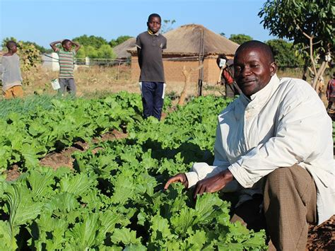
Every season, countless small-scale farmers lose income because fresh produce cannot reach buyers quickly enough. Limited market access, unreliable logistics, price uncertainty and post-harvest spoilage reduce profitability and discourage agricultural growth.
Farmers often struggle to identify reliable buyers before their produce loses value.
Perishable crops deteriorate quickly when sales and transportation are delayed.
Limited access to market information weakens farmers' bargaining power and income.
Coordinating transport between farms and buyers remains difficult and expensive.
Farmers need timely access to buyers before crops lose quality and value.
Finding reliable buyers at the right time remains a challenge for many producers.
Coordinating transport efficiently helps reduce delays and unnecessary losses.
Better visibility of markets supports more informed selling and purchasing decisions.
The Shelf brings together farmers, buyers, transport providers, and agricultural partners in one coordinated digital ecosystem. By improving market visibility, logistics coordination, and transaction transparency, the platform helps reduce post-harvest losses while creating more efficient agricultural value chains.
Built around verifiable market participation, visible availability, traceable orders, and coordinated delivery.
Digital Agricultural Market Linkage & Post-Harvest Management Platform
Lists produce
Updates quantities
Harvest ready
Searches produce
Places orders
Tracks purchases
Receives requests
Collects produce
Delivers orders
Better market access, better logistics, better farmer incomes.
Farmers publish produce, harvest readiness, quantities and availability.
Buyers discover produce based on location, quantity and availability.
Couriers receive delivery requests and transport produce efficiently.
Orders are tracked from listing through successful delivery.
Market visibility supports informed pricing and production decisions.
Transparent ordering and payment workflows build trust.
The Shelf is currently in prototype development, with user interfaces, platform workflows, database architecture and operational processes designed for pilot implementation in Choma District.
The prototype brings farmers, buyers and couriers together through a coordinated platform designed to improve market access, manage orders and reduce delays that contribute to post-harvest losses.
The prototype includes dedicated workflows for the different participants in the agricultural marketplace.
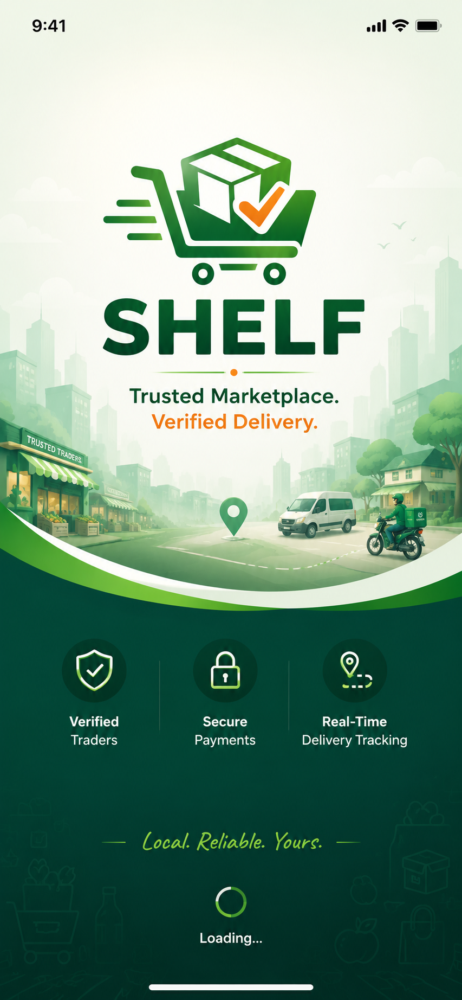
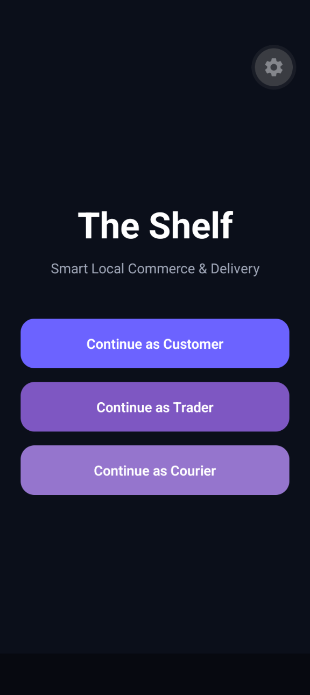
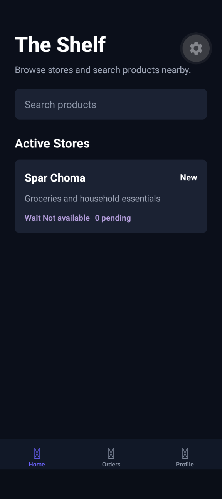
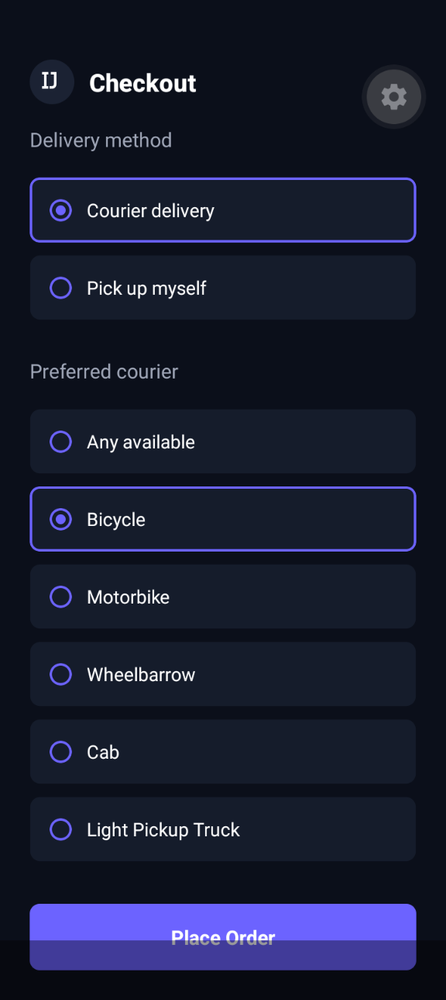
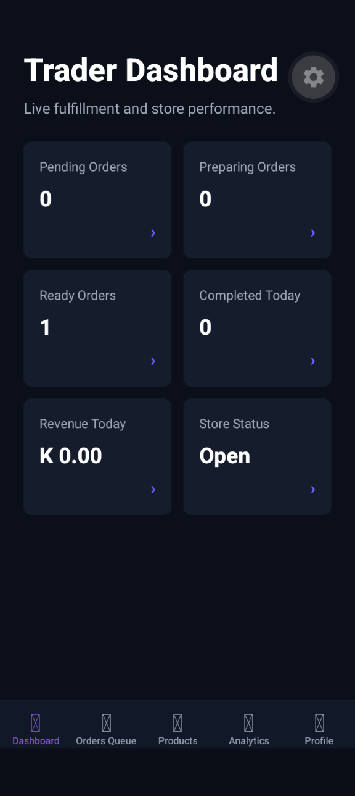
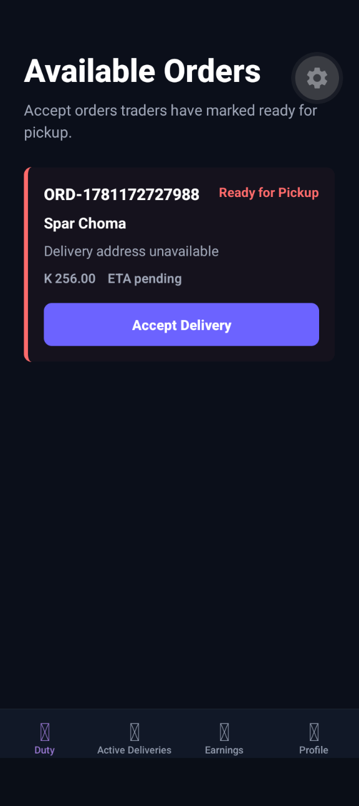
The Shelf's prototype includes a structured backend architecture supporting products, orders, inventory, queue management, payments and delivery coordination.
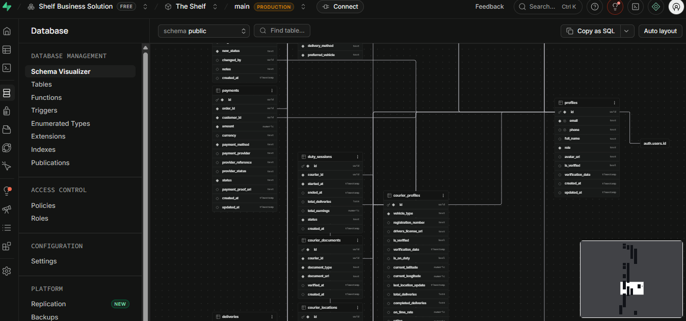
The database architecture connects the major participants and operational processes within The Shelf, providing a foundation for future pilot deployment and scaling.
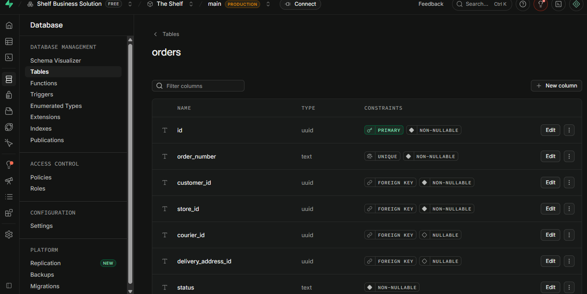
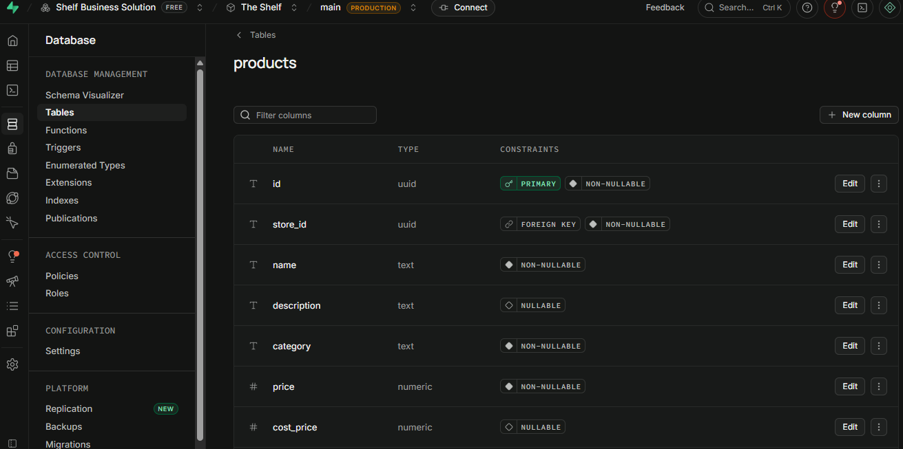
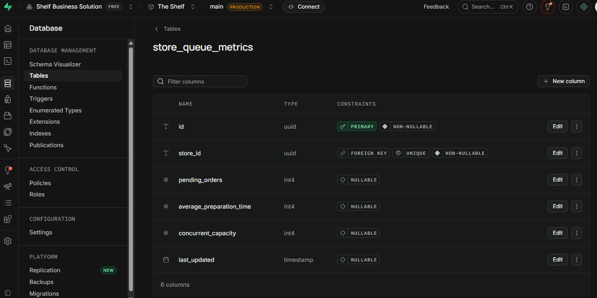
The Shelf has progressed beyond the conceptual stage. The project has a public website, defined platform architecture, database design and user-interface prototypes that form the foundation for pilot testing.